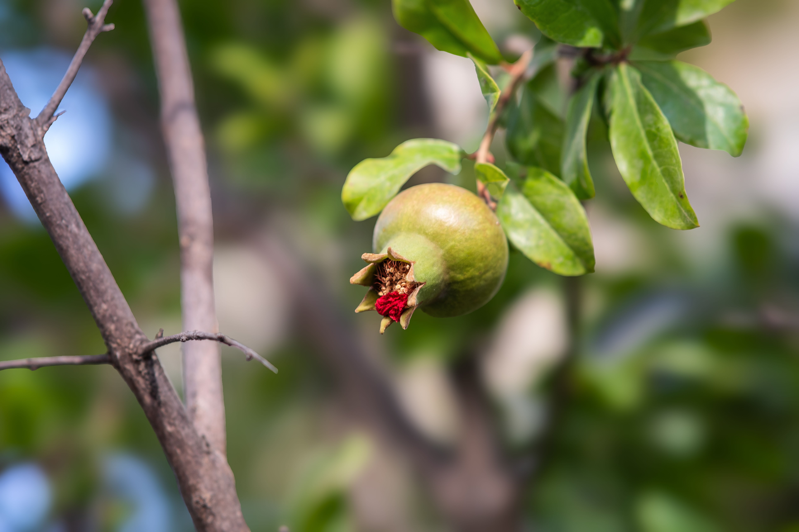

Laser Etcher Modernization

Replaced a deprecated Java etching platform with a full-stack Ignition and Python application that restored serialized traceability and was projected to save more than $143,000 over three years.
- Designed toward an 11-line, 5-plant rollout
- Integrated PLC, SQL, vendor, ERP, and MES data
- Supported batches of roughly 5,000 records